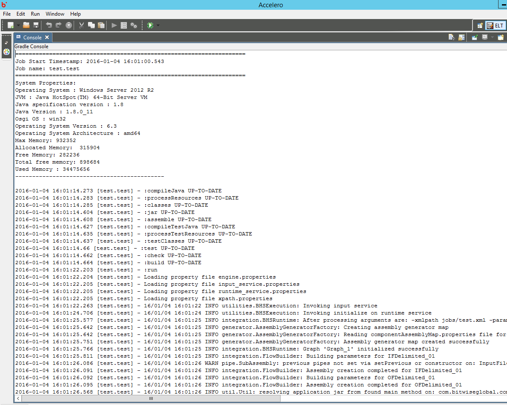

Hydrograph Help
Hydrograph Help
Job Console
Hydrograph Release Version 1.0
Job Console acts as an interface that displays execution results of the job that is cuurently running.
It is used to monitor the execution of a job step-by-step. Along with the timestamp of job execution and the user's system details are also displayed in the console.
